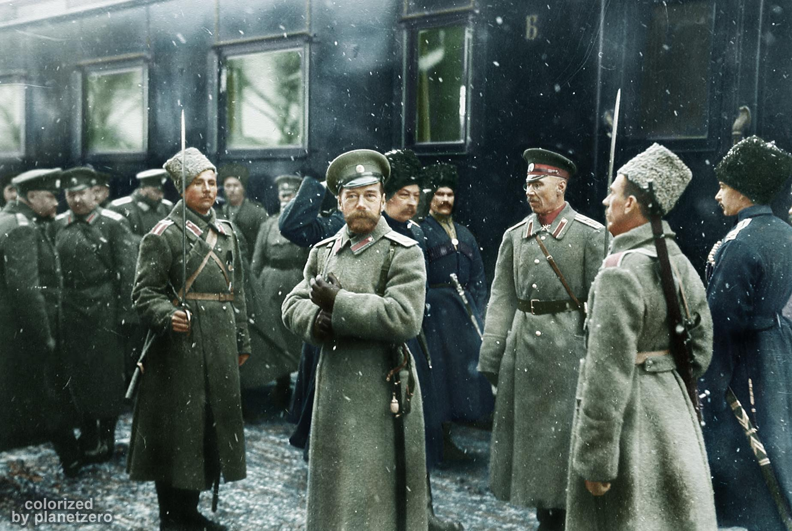
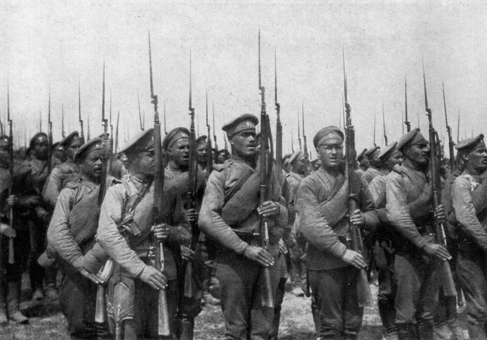
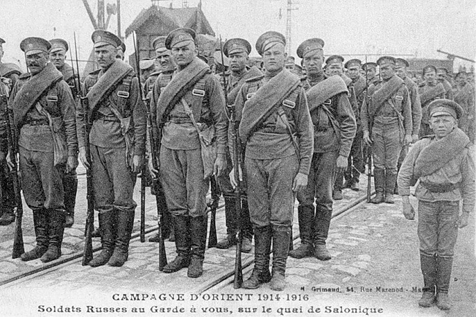

Армия
Армия империи как регулярная армия были созданы императором Петром I и комплектовались на основе рекрутской повинности. Изначально у рекрутов был пожизненный срок службы. Северная война показала эффективность новой армии. Победы русской армии позволили существенно отодвинуть границы империи, завоевать выход сначала к Балтийскому, а затем и к Чёрному морям. Срок службы несколько раз сокращался, и в итоге, в XIX веке военная реформа Александра II установила всеобщую воинскую повинность в 7 лет и произвела реорганизацию военного управлении и перевооружение.
| Сравнительная таблица военных расходов на 1897 год | ||
|---|---|---|
| Государство | Сухопутные войска | на душу населения |
| Австро-Венгрия | 169 469 000 | 3,81 % |
| Англия | 229 515 000 | 5,76 % |
| Германия | 290 955 000 | 5,57 % |
| Россия | 284 379 994 | 2,50 % |
| Франция | 236 515 000 | 5,76 % |
В то же время, при мобилизациях во время тяжёлых войн, имеющих характер защиты Отечества, армейская пехота увеличивала свой состав за счёт создания второразрядных частей ополчения (из отслуживших в армии 40-летних и неслуживших). С основанием регулярной армии ополчение созывалось в Северную войну (1708 год), в 1806 году, Отечественную войну (1812 год) и Крымскую войну (1855 год). Важную роль ополчение сыграло в 1812 году, когда крестьяне, не желавшие идти в рекруты, с началом войны охотно записывались в ополчение, тем самым проявляя патриотизм и освобождаясь от крепостничества. В то же время, при мобилизациях во время тяжёлых войн, имеющих характер защиты Отечества, армейская пехота увеличивала свой состав за счёт создания второразрядных частей ополчения (из отслуживших в армии 40-летних и неслуживших).
 С основанием регулярной армии ополчение созывалось в Северную войну (1708 год), в 1806 году, Отечественную войну (1812 год) и Крымскую войну (1855 год). Важную роль ополчение сыграло в 1812 году, когда крестьяне, не желавшие идти в рекруты, с началом войны охотно записывались в ополчение, тем самым проявляя патриотизм и освобождаясь от крепостничества.
В то же время, при мобилизациях во время тяжёлых войн, имеющих характер защиты Отечества, армейская пехота увеличивала свой состав за счёт создания второразрядных частей ополчения (из отслуживших в армии 40-летних и неслуживших).
С основанием регулярной армии ополчение созывалось в Северную войну (1708 год), в 1806 году, Отечественную войну (1812 год) и Крымскую войну (1855 год). Важную роль ополчение сыграло в 1812 году, когда крестьяне, не желавшие идти в рекруты, с началом войны охотно записывались в ополчение, тем самым проявляя патриотизм и освобождаясь от крепостничества.
Военная реформа Александра II ввела льготы для освобождения от военной службы: возрастные ограничения, круглое сиротство, единственный сын, священнослужитель и т. д.
На начало реформ (1862—1874) до 70 % офицеров не имели никакого военного образования, поэтому организовываются юнкерские училища, основана Военно-юридическая академия. В рамках военной реформы в 1863 году отменяется такая форма наказаний как прогон через строй. В 1867 году также проводится реформа военно-судебной системы, которая ввела открытый суд, построенный на состязательных началах. Офицерский корпус пополнялся за счёт системы военных учебных заведений: кадетских корпусов, военных и юнкерских училищ. Особое место занимала Академия Генерального штаба.
Всего к началу 1914 года в Российской Императорской армии состояли 3 гвардейские пехотные дивизии, 4 гренадерские дивизии, 52 пехотные дивизии, гвардейская стрелковая бригада, 5 стрелковых бригад, 11 Сибирских стрелковых дивизий, 3 Финляндские стрелковые бригады, 2 Кавказские стрелковые бригады, 6 Туркестанских стрелковых бригад, Кубанская пластунская бригада, а также другие части пехоты. В составе армии имелись 2 гвардейские кавалерийские дивизии, 16 армейских кавалерийских дивизий, 6 казачьих дивизий, отдельная гвардейская кавалерийская бригада, 7 отдельных кавалерийских и казачьих бригад и др. части.
С основанием регулярной армии ополчение созывалось в Северную войну (1708 год), в 1806 году, Отечественную войну (1812 год) и Крымскую войну (1855 год). Важную роль ополчение сыграло в 1812 году, когда крестьяне, не желавшие идти в рекруты, с началом войны охотно записывались в ополчение, тем самым проявляя патриотизм и освобождаясь от крепостничества.
В то же время, при мобилизациях во время тяжёлых войн, имеющих характер защиты Отечества, армейская пехота увеличивала свой состав за счёт создания второразрядных частей ополчения (из отслуживших в армии 40-летних и неслуживших).
С основанием регулярной армии ополчение созывалось в Северную войну (1708 год), в 1806 году, Отечественную войну (1812 год) и Крымскую войну (1855 год). Важную роль ополчение сыграло в 1812 году, когда крестьяне, не желавшие идти в рекруты, с началом войны охотно записывались в ополчение, тем самым проявляя патриотизм и освобождаясь от крепостничества.
Военная реформа Александра II ввела льготы для освобождения от военной службы: возрастные ограничения, круглое сиротство, единственный сын, священнослужитель и т. д.
На начало реформ (1862—1874) до 70 % офицеров не имели никакого военного образования, поэтому организовываются юнкерские училища, основана Военно-юридическая академия. В рамках военной реформы в 1863 году отменяется такая форма наказаний как прогон через строй. В 1867 году также проводится реформа военно-судебной системы, которая ввела открытый суд, построенный на состязательных началах. Офицерский корпус пополнялся за счёт системы военных учебных заведений: кадетских корпусов, военных и юнкерских училищ. Особое место занимала Академия Генерального штаба.
Всего к началу 1914 года в Российской Императорской армии состояли 3 гвардейские пехотные дивизии, 4 гренадерские дивизии, 52 пехотные дивизии, гвардейская стрелковая бригада, 5 стрелковых бригад, 11 Сибирских стрелковых дивизий, 3 Финляндские стрелковые бригады, 2 Кавказские стрелковые бригады, 6 Туркестанских стрелковых бригад, Кубанская пластунская бригада, а также другие части пехоты. В составе армии имелись 2 гвардейские кавалерийские дивизии, 16 армейских кавалерийских дивизий, 6 казачьих дивизий, отдельная гвардейская кавалерийская бригада, 7 отдельных кавалерийских и казачьих бригад и др. части.
Гвардия
Российскую Императорскую гвардию учредил Пётр I из «потешных» Преображенского и Семёновского полков. Изначально гвардия использовалась для личной охраны императора, позже эту функцию выполняли кавалергарды.
Под Нарвой (1700) состоялось боевое крещение гвардии. Кавалергарды (созданные при Екатерине I) прошли боевое крещение в битве при Аустерлице.
В связи с обязательной службой дворян их стали записывать рядовыми ещё во младенчестве. Позже была дарована Жалованная грамота 1785 года, освобождающая дворян от обязательной службы. Кроме этого, Павел I пытался навести порядок путём отчисления из штата формально записанных в гвардию.

Офицеры гвардии в сравнении с армейскими получают преимущество в два чина по Табели о рангах. Кроме этого привилегии были и по возможности выслуги: на 1883 год армейскому офицеру требовалось более 30 лет, чтобы дослужиться до полковника, гвардейскому — от 15 до 18 лет, а в трёх наиболее привилегированных гвардейских полках — 10 лет.
К концу XVIII века рядовые должности в гвардии уже заполнялись, в основном, рекрутами из податных сословий.
В силу привилегированного положения и близости к императору гвардия играла ключевую роль в дворцовых переворотах XVIII века.
С ростом гвардии в 1813 году она была разделена на «Старую» и «Молодую».
К началу Первой мировой войны Российская Императорская гвардия состояла из трёх пехотных и двух кавалерийских дивизий, стрелковой бригады, отдельной кавалерийской бригады, а также ряда других отдельных гвардейских частей.
Иррегулярные войска
Казачьи части к XX веку иррегулярными можно назвать только по традиции. Они имели кадровые (первой очереди) и резервные части (второй и третьей очереди). Очереди — это возрастные категории резервистов (по современной терминологии).

Казаки давали русской армии прекрасного качества лёгкие конные полки, конные артиллерийские батареи и пластунские батальоны; а также гвардейские части (они были только кадровыми, постоянного состава).
Собственно иррегулярные — это создаваемые в военное время на добровольной основе части и соединения из народов азиатской России и Кавказа, не подлежащих призыву в армию. Самые известные из них — Кавказская туземная конная дивизия, Текинский конный полк.
Государственное ополчение
В то же время, при мобилизациях во время тяжёлых войн, имеющих характер защиты Отечества, армейская пехота увеличивала свой состав за счёт создания второразрядных частей ополчения (из отслуживших в армии 40-летних и неслуживших).

С основанием регулярной армии ополчение созывалось в Северную войну (1708 год), в 1806 году, Отечественную войну (1812 год) и Крымскую войну (1855 год). Важную роль ополчение сыграло в 1812 году, когда крестьяне, не желавшие идти в рекруты, с началом войны охотно записывались в ополчение, тем самым проявляя патриотизм и освобождаясь от крепостничества.